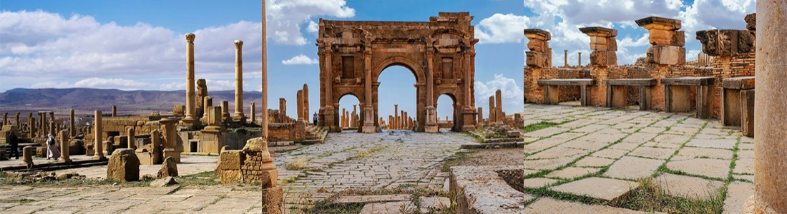
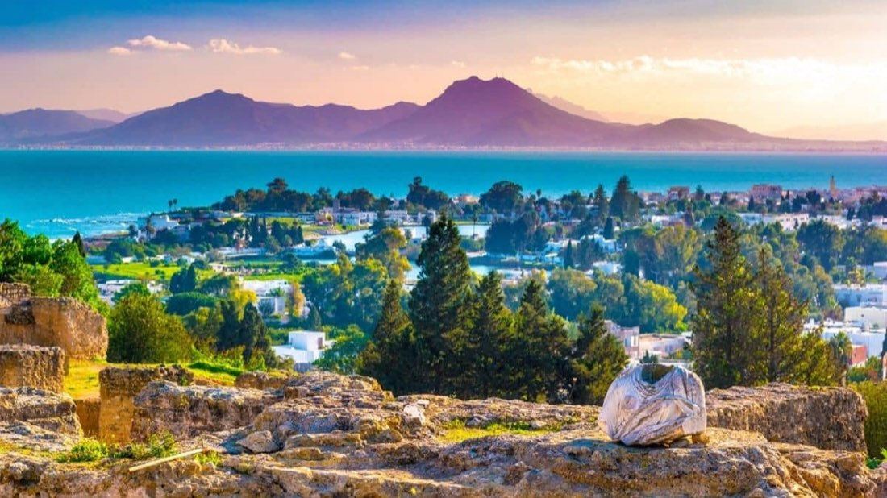
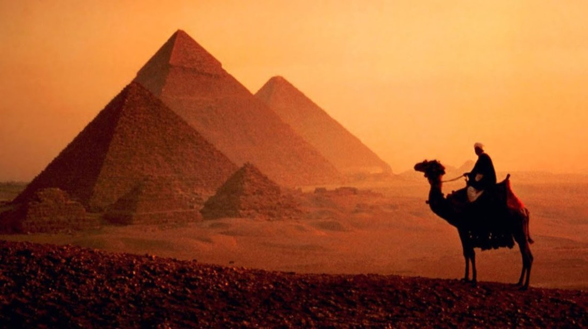
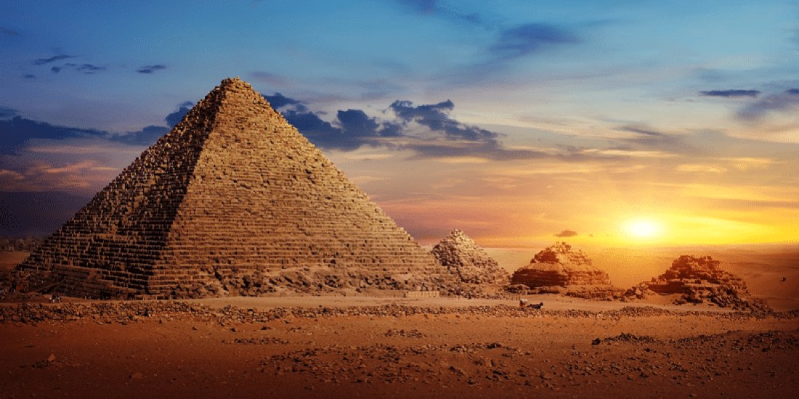

AfrikaÖnceki dönemKuzey Afrika Cezayir Turu
Biskra, Batna, Timgad, Konstantin, Cezayir
Güncel tarih ve fiyatiçin arayın
İncele →
Şehir etiketine dokunun; programın o günü açılsın.
Aşağıdaki fiyatlar önceki dönem içindir. Güncel fiyat, tarih ve kontenjan için bizi arayın.
| Tek Kişilik Odada Kişi Başı | €1.470 |
|---|---|
| İki Kişilik Odada Kişi Başı | ₺1.312,50 |
| Üç Kişilik Odada Kişi Başı | ₺1.312,50 |
| 0 - 2 Yaş | €315 |
|---|---|
| 2 - 6 Yaş | ₺1.260 |
| 6 - 12 Yaş | ₺1.260 |
* 12 yaş dahil değildir.
* 0 - 6 yaş çocuk fiyatları yataksızdır.
İstanbul Tunus Susa
İstanbul Yeni Havalimanı Dış Hatlar Terminali Giden Yolcu Salonu THY Bankosunda 04.55’te buluşuyoruz. Check-in ve pasaport işlemlerini müteakip THY’nin TK661 seferi ile 07.55'te Tunus’a doğru yola çıkıyoruz, 08.55’te varış. Varışta yapacağımız şehir turumuzda; Bardo Mozaik Müzesi, Zeytuna Camisi, Tourbet El Bey (Osmanlı Beylerbeyi aile mezarlığı) ve Bab El Bahar görülecek yerler arasındadır. Medina’daki (eski şehir) Souk’ta (Tunus’un eski ve otantik çarşısında) alışveriş imkanı ardından akşam yemeği ve konaklama otelimizde.
Susa Kayrevan El Cem Mehdiye Susa
Otelde alacağımız kahvaltının ardından ülkenin güneyine doğru inip yakından tanıma imkanı buluyoruz. İslamiyetin Afrika kıtasına ilk geliş noktası olan ve ilk caminin yapıldığı tarihi Kayrevan şehrinde Aglabit Havuzları, Sahabe Ebu Zem'a El Belevi Hz. Kabri, Ukba Camisi ve Barutta Kuyusu'nun gezilmesini müteakip El Cem şehrinde Tarihi Amfitiyatro'nun görülmesi sonrası güzel bir sahil şehri olan Mehdiye'ye doğru yola çıkıyoruz. Antik Kartaca'nın ticaret merkezi olan ve Cape Africa (Afrika'nın Burnu) olarak adlandırılan bu şehir Fatımi Devleti'nin de ilk başkentidir. Mehdiye şehir turumuzda eski şehrin giriş kapısı olan Skifa Kahla ve 916 yılında inşa edilen Mehdiye Ulu Camisi ziyaret edeceğimiz yerler arasındadır. Gezimizin ardından akşam yemeği ve konaklama otelimizde.
Susa Manastır Hammamet Nabil Susa
Otelde alacağımız kahvaltının ardından Manastır şehrine doğru yola çıkıyoruz. Varışta Ribat ve Habib Bourguiba Anıt Mezarı'nın görülmesi sonrası turistik yatırımları ile ünlü Susa şehrinde Tunus’un ünlü turistik limanı Port El Kantaoui’nin gezilmesinin ardından Hammamet'e hareket ediyoruz. Hammamet Kalesi'ni dışarıdan görmeyi müteakip eski şehir merkezinde alışveriş için verilecek serbest zamanın ardından Nabil'e doğru yola çıkıyoruz. Nabil'de çömlek atölyesi ziyareti sonrası Susa'ya geri dönüyoruz. Eski şehir merkezindeki Susa Ulu Camisi'nin görülmesi ve alışveriş için serbest zamanı müteakip otelimize dönüyoruz. Akşam yemeği ve konaklama otelimizde.
Susa Kartaca Tunus İstanbul
Otelde alacağımız kahvaltının ardından başkent Tunus’a hareket ediyoruz. Kartaca Harabeleri gezisi sonrası başkent Tunus'a hakim bir tepedeki Sidi Bu Said bölgesinde verilecek serbest zamanın ardından Tunus Havalimanı’na doğru yola çıkıyoruz. Check-in işlemlerini müteakip, THY’nin TK664 seferi ile 17.50’da İstanbul'a uçuş. Varış 22.45.
Bir başka organizasyonda buluşmak üzere…

AfrikaÖnceki dönem
AfrikaÖnceki dönem
AfrikaÖnceki dönem